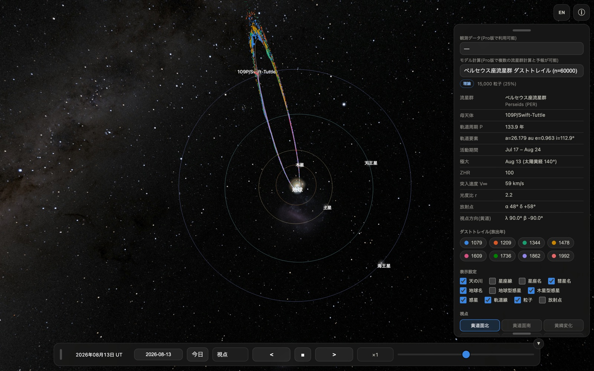
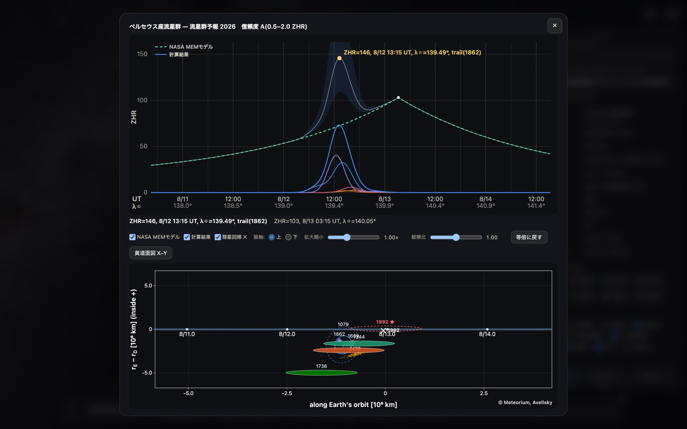
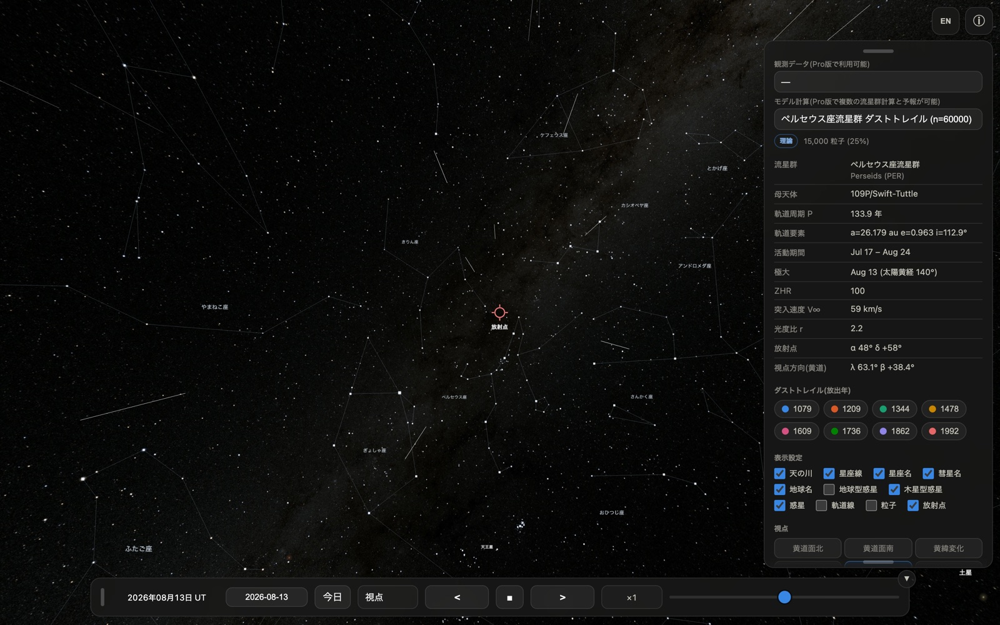

Meteorium for Mac
日本語 — Mac 版マニュアル
Meteorium は、流星群のもとになる「ダストトレイル」(彗星が軌道上に残した塵の帯)を 科学計算に基づいて 3D 表示する天文アプリです。無料版には、ペルセウス座流星群の母彗星 109P/スウィフト・タトルが残した 8回帰ぶん(1079・1209・1344・1478・1609・1736・ 1862・1992年)のダストトレイル 60,000 粒子が収録されています。
- 動作環境: macOS 15.6 以降(Apple シリコン / Intel 両対応のユニバーサルアプリ)
- 計算・描画はすべて端末内。データ収集・広告なし(公開データを取得するときだけ通信します)
- iPhone / iPad 版と同じ App なので、同じ Apple ID なら追加の費用なく全デバイスで使えます
1. ウインドウと画面の構成

Mac 版はふつうの macOS ウインドウとして開きます。ウインドウの端をドラッグして 自由な大きさに変えられ、画面の広さに合わせて 3D 表示も追従します。
| 場所 | 内容 |
|---|---|
| 中央 | 3D 表示(ドラッグ=視点回転、ホイール/トラックパッド=ズーム) |
| 右上 | EN/JP(言語切替)、ⓘ(パネル開閉) |
| 右パネル | データセット・ダストトレイル凡例・表示設定・視点・粒子設定 |
| 下部バー | 日時(UT)・日付入力・今日・視点・時間操作 |
iPhone 版との違い: 起動時のウインドウ幅が 900 ピクセル以上あると、右パネルが 最初から開いた状態で表示されます(iPhone では ⓘ ボタンで開きます)。パネルと下部バーは つまみ(グリップ)をドラッグしてウインドウ内の好きな位置へ移動でき、パネル下端の つまみで長さも調整できます。
- 緑ボタン(または control + ⌘ + F)でフルスクリーン 表示になります。大きな画面ほど粒子の立体構造が見やすくなります
- ウインドウ幅を 640 ピクセル未満まで狭めると、iPhone 版と同じ縦長のレイアウトに 切り替わります
- 下部バー右上の ▼ ボタンでバー全体を畳めます(▲ で復元)
2. マウス / トラックパッドの操作
| 操作 | 動作 |
|---|---|
| ドラッグ | 視点の回転 |
| スクロールホイール | ズームイン / ズームアウト |
| トラックパッドの2本指スワイプ | ズームイン / ズームアウト |
| トラックパッドのピンチ | ズームイン / ズームアウト |
| つまみをドラッグ | パネル・下部バーの移動 |
地上視点(第5章)では、ドラッグが「空を見回す」操作、スクロールが視野角(画角)の 変更になります。狭くすると望遠、広くすると広角の見え方です。
3. キーボード
Meteorium はマウス操作だけで完結しますが、Mac 版では次のキーが使えます。
| キー | 動作 |
|---|---|
| ← / → | 流星群予報のダストトレイル断面図を 左右にスクロール(予報ウインドウを開いているときのみ) |
| ⌘ + W | ウインドウを閉じる |
| ⌘ + Q | Meteorium を終了 |
| control + ⌘ + F | フルスクリーンの切り替え |
日付欄はクリックしてキーボードから直接入力できます(YYYY-MM-DD 形式)。
4. 流星群予報の表示

無料版にはペルセウス座流星群の 2026 年の予報が収録されています。右パネルの 「予報計算」ボタンを押すと、上に ZHR プロファイル、下にダストトレイル断面図を並べた 予報ウインドウが開きます。
- 上のグラフ: NASA MEM モデル(年間背景)と本モデルの計算結果、および ダストトレイル別の色分け寄与
- 下のグラフ: 地球がトレイルを横切る位置を表した断面図。粒子の散布と 1σ / 2σ の 誤差楕円を表示します
- 「黄道面図 X–Y」ボタンで、黄道面上の位置関係を別ウインドウで開けます (拡大縮小・ドラッグ移動に対応)
Mac の広い画面ではグラフの目盛りや文字が読みやすく、← / → キーで 断面図を左右に送りながら細部を確認できます。
無料版が表示できるのは 2026 年のペルセウス座流星群のみです。他の年・他の流星群の 予報は Pro 版(準備中)で計算できます。
5. 地上視点の流星ショー

視点の「地上」を選ぶと、地上から放射点方向を見上げた観察視点になります。活動期間 (ペルセウス座群: 7/17〜8/24)の日付では、放射点から流星が流れる様子が再現されます (表示は ZHR=5,000 相当)。
Mac の大画面では、火球・永続痕・流星クラスターといった珍しい現象が起きた瞬間も 見逃しにくくなります。フルスクリーンにして時間を進めれば、そのままスクリーンセーバーの ように眺められます。
6. iPhone / iPad 版との違いまとめ
| iPhone / iPad | Mac | |
|---|---|---|
| 視点の回転 | 1本指ドラッグ | マウスドラッグ |
| ズーム | ピンチ | ホイール / 2本指スワイプ / ピンチ |
| パネルの初期状態 | 畳まれている(ⓘ で開く) | 幅 900px 以上なら開いている |
| 画面の大きさ | 端末固定 | ウインドウ可変・フルスクリーン可 |
| 画面の回転 | 縦横で自動再配置 | なし(ウインドウのリサイズで追従) |
| キーボード | 日付入力のみ | 日付入力 + 断面図スクロール |
収録データ・計算結果・表示内容は全プラットフォームで同一です。
7. うまく動かないときは
- 動作が重い: 右パネルの「表示粒子数」を 25% や 10% に下げてください。 ウインドウを小さくするか、フルスクリーンを解除するのも効果があります
- 画面が真っ暗なまま: ウインドウをいったんリサイズしてみてください。それでも 直らない場合は ⌘ + Q で終了して再度起動してください
- 表示が以前のまま更新されない: App Store でアップデートしたあとは、アプリを 完全に終了(⌘ + Q)してから起動し直してください
English — Mac Edition Manual
Meteorium is an astronomy app that renders the "dust trails" behind meteor showers — the ribbons of comet dust left along a comet's orbit — in 3D, from real orbital computation. The free edition ships the 60,000 dust grains of eight trails (1079, 1209, 1344, 1478, 1609, 1736, 1862 and 1992) released by 109P/Swift-Tuttle, the parent comet of the Perseids.
- Requires macOS 15.6 or later (universal app: Apple silicon and Intel)
- All computation on your device, with no data collection and no ads (it goes online only to fetch the published datasets)
- Same App as the iPhone / iPad edition, so it runs on all your devices under the same Apple ID at no extra cost
1. The window and its layout
Meteorium opens as an ordinary macOS window. Drag any edge to resize it — the 3D view follows the window.
| Where | What |
|---|---|
| Centre | 3D view (drag to rotate, wheel / trackpad to zoom) |
| Top right | EN/JP (language), ⓘ (show / hide the panel) |
| Right panel | Dataset, dust-trail legend, display options, viewpoints, particles |
| Bottom bar | Date and time (UT), date entry, Today, viewpoint, time controls |
Difference from the iPhone: when the window opens at least 900 pixels wide, the right panel starts out open (on iPhone you open it with the ⓘ button). Both the panel and the bottom bar can be dragged around the window by their grip, and the grip at the bottom of the panel adjusts its length.
- The green button (or control + ⌘ + F) goes full screen. The larger the display, the easier it is to read the three-dimensional structure of the trails
- Narrowing the window below 640 pixels switches to the tall iPhone layout
- The ▼ button at the top right of the bottom bar folds the bar away (▲ brings it back)
2. Mouse and trackpad
| Gesture | Action |
|---|---|
| Drag | Rotate the view |
| Scroll wheel | Zoom in / out |
| Two-finger swipe (trackpad) | Zoom in / out |
| Pinch (trackpad) | Zoom in / out |
| Drag a grip | Move the panel or the bottom bar |
In the ground view (section 5) dragging looks around the sky and scrolling changes the field of view — narrow for a telephoto look, wide for a wide-angle one.
3. Keyboard
Everything can be done with the mouse alone, but these keys are available on the Mac:
| Key | Action |
|---|---|
| ← / → | Scroll the dust-trail cross-section left / right (only while the forecast window is open) |
| ⌘ + W | Close the window |
| ⌘ + Q | Quit Meteorium |
| control + ⌘ + F | Toggle full screen |
Click the date field to type a date directly, in YYYY-MM-DD form.
4. The meteor shower forecast
The free edition ships the 2026 forecast for the Perseids. Press "Forecast" in the right panel and a window opens with the ZHR profile on top and the dust-trail cross-section below.
- Upper chart: the NASA MEM model (the annual background) and this model's result, with each dust trail's contribution in its own colour
- Lower chart: where the Earth cuts through the trails, with the grains scattered around the encounter point and their 1σ / 2σ error ellipses
- The "Ecliptic plane X–Y" button opens the geometry in a separate window, which you can zoom and drag
The Mac's larger display makes the tick labels and annotations easy to read, and ← / → pans the cross-section while you inspect the detail.
The free edition can only display the 2026 Perseids. Forecasts for other years and other showers are computed in the Pro edition (in preparation).
5. The meteor show in the ground view
Choosing the "Ground" viewpoint puts you on the ground, looking towards the radiant. On dates inside the activity period (Perseids: Jul 17 – Aug 24) meteors stream out of the radiant, rendered at the equivalent of ZHR = 5,000.
On a large display it is much harder to miss the rarer events — fireballs, persistent trains and meteor clusters. Go full screen, let time run, and it doubles as a screen saver.
6. Differences from the iPhone / iPad edition
| iPhone / iPad | Mac | |
|---|---|---|
| Rotate | One-finger drag | Mouse drag |
| Zoom | Pinch | Wheel / two-finger swipe / pinch |
| Panel at launch | Folded (ⓘ opens it) | Open when at least 900 px wide |
| Display size | Fixed by the device | Resizable window, full screen |
| Screen rotation | Re-lays out for portrait / landscape | None (follows the window size) |
| Keyboard | Date entry only | Date entry + cross-section scrolling |
The bundled data, the computation and everything shown are identical on every platform.
7. If something goes wrong
- Sluggish rendering — lower "Particles shown" in the right panel to 25% or 10%. Making the window smaller, or leaving full screen, also helps
- The view stays black — resize the window once. If that does not help, quit with ⌘ + Q and start the app again
- An update does not seem to take effect — after updating from the App Store, quit the app completely (⌘ + Q) and launch it again
プライバシーポリシー / Privacy Policy
本アプリは、個人情報を含むいかなるデータも収集・送信・保存しません。完全に 通信は利用者が公開データを取得するときだけで、広告・トラッキング・解析ツール・ アカウント機能はありません。 設定はお使いの端末内にのみ保存されます。
The app does not collect, transmit, or store any data. All computation runs on your device, going online only when you fetch the published datasets, with no ads, tracking, analytics, or accounts. Preferences are stored only on your device.
お問い合わせ / Contact: avellsky@gmail.com